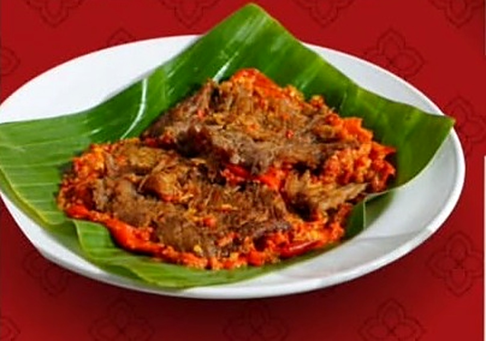
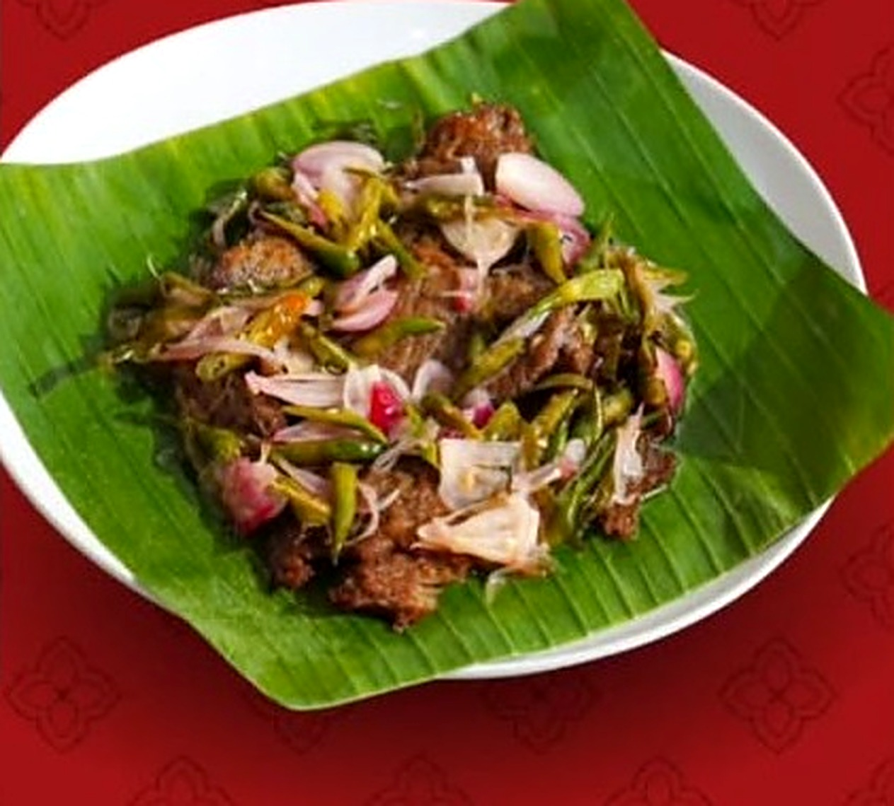

Bekasi
01
Jagonya
Dendeng Batokok!
Kenikmatan sajian khas Minang dengan pilihan lauk, nasi, dan minuman yang siap menemani waktu makanmu.
- 3Cabang
Jabodetabek - 7 hariBuka
setiap hari - 26KDendeng
Batokok
Favorit pelangganNasi Dendeng Batokok

Buka setiap hari07.00 – 22.00 WIB
Rasa khas yang
selalu dirindukan.
Jom Batokok menghadirkan pilihan makanan dan minuman dengan inspirasi cita rasa Minang. Dari dendeng batokok hingga sajian nasi dan kopi, temukan menu favoritmu di cabang terdekat.
Kunjungi cabang kami
Jagonya dendeng batokok!
Satu meja,
banyak cerita.
Makan bersama jadi lebih seru dengan pilihan lauk dan minuman dari Jom Batokok.
Yuk, pesan sekarangDatang ke cabang
terdekatmu.
Pilih lokasi Jom Batokok yang paling nyaman untuk kamu kunjungi. Semua cabang buka setiap hari.
Jakarta
02
Jom Batokok Santa
Bekasi
03
Catatan: alamat cabang ditampilkan sesuai materi yang diberikan. Tautan peta membuka pencarian lokasi; pastikan pin dan alamat tepat sebelum perjalanan.
Sudah tahu mau
makan apa hari ini?
Hubungi Jom Batokok melalui WhatsApp untuk menanyakan menu dan pemesanan.